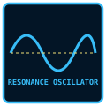

The Weeping River & Abyssal Hydrology
- The River of Liquid Grief — Source of All Sorrow
- Overview
- I. What The Weeping Is
- II. How The Weeping Works
- III. How Sorrow Entities Form
- IV. The Weeping's Properties
- V. The Abyssal Well — Gateway to The Weeping
- VI. The Deep Vault — The Weeping's Chamber
- VII. The Weeping and The Maw
- VIII. The Weeping and The Absolvohan
- IX. The Weeping and The Dream Realm (Somnus)
- X. The Narrative Function
- XI. The Questions
Overview
# SOMNARAK — The Weeping Deep Dive
The River of Liquid Grief — Source of All Sorrow
"We thought the entities came from us. They don't. They come from beneath us — from the river of tears that flows under the city."
Overview
The Weeping (울음 — Ul-eum) is a river of liquid Han that flows beneath Somnarak — deep underground, beneath the Alpha Tree, beneath the foundations, beneath everything. It is the source of all Sorrow Entities. It is the city's lifeblood. It is the reason Somnarak exists.
The Weeping is not water. The Weeping is liquid grief — the collective sorrow of every person who has ever lived in Somnarak, flowing through the city's foundations like blood through veins. The Weeping is ancient — older than the city, older than the Consolihan, older than the Cheongula. The Weeping was here before the settlers arrived. The Weeping will be here long after the city falls.
This is the full story.
I. What The Weeping Is
The Nature of The Weeping
The Weeping is not a river in the traditional sense. It is a flow of liquid Han — raw, unstructured sorrow in fluid form. The Weeping does not follow the laws of physics. It follows the laws of sorrow — flowing toward grief, pooling around loss, rising where suffering is greatest.
Properties:
- State: Liquid Han — raw, unstructured sorrow
- Temperature: Cold — sorrow is cold, even in liquid form
- Flow: Constant — the river never stops
- Depth: Varies — shallow at the edges, deep at the center
- Visibility: Invisible from the surface — only accessible through the Deep Vault or the Abyssal Well
- Sound: The Weeping weeps — a constant, low murmur of grief
The Origin
The Weeping predates the city. The Weeping predates the settlers. The Weeping predates everything.
The Weeping is the planet's emotional foundation — the accumulated sorrow of Mugenhan, flowing through the planet's crust like magma flows through the Earth's mantle. The Weeping is not unique to Somnarak — it flows beneath the entire planet. But Somnarak is built at a point where the Weeping surfaces — where the river comes closest to the surface, where the planet's grief is most accessible.
The settlers did not create the Weeping. The settlers found the Weeping. And the settlers built their city on top of it.
The Location
The Weeping flows beneath Somnarak — deep underground, beneath the Alpha Tree, beneath the Deep Vault, beneath everything the city is built on.
Access points:
- The Abyssal Well (Building 5 of the Alpha Tree) — the deepest point where the Weeping is accessible
- The Deep Vault (beneath Building 1) — a sealed chamber where the Weeping's influence is strongest
- The Central Plaza — where the Weeping surfaces, feeding the Alpha Tree's roots
- The Maw — where the Weeping consumed the thousand, creating the First Sorrow
- The Echo Gardens — where the Weeping's influence creates crystallized sorrow
II. How The Weeping Works
The Flow
The Weeping flows through the city's foundations — following channels, pooling in depressions, rising where sorrow is greatest. The flow is not random — it is directed by the city's emotional state.
The flow pattern:
- The Weeping flows toward grief — pooling where citizens mourn, rising where citizens suffer
- The Weeping flows away from joy — draining where citizens celebrate, falling where citizens are happy
- The Weeping flows toward the Alpha Tree — feeding the tree, powering the city
- The Weeping flows toward the Maw — the First Sorrow, the deepest grief, the strongest pull
The Cycle
The Weeping is connected to the city in a cycle:
- Citizens generate sorrow through daily life — grief, loss, debt, Fracture
- Sorrow seeps downward — through the ground, through the structures, through the foundations
- Sorrow collects in the Weeping — flowing through underground channels
- The Weeping feeds the Alpha Tree — powering the city
- The city needs the Weeping to function
- The city's existence generates more sorrow
- Return to step 1
The paradox: The city needs the Weeping to survive. But the Weeping also creates Sorrow Entities — which threaten the city. The R.D. exists to manage this paradox.
The Alpha Tree Connection
Alpha Tree is connected to the Weeping — its roots plunge into the river, drawing Han from the liquid sorrow to power the city.
How it works:
- Alpha Tree's roots extend deep — reaching the Weeping's main channel
- The roots absorb Han — drawing liquid sorrow from the river
- The Han is processed — converted into energy that powers the city's infrastructure
- The processed Han is distributed — through the city's Veil system, through the Han-lamps, through the buildings
The consequence: Alpha Tree is the city's heart. The Weeping is the city's blood. Without the Weeping, the Alpha Tree dies. Without the Alpha Tree, the city dies.
III. How Sorrow Entities Form
The Crystallization Process
Sorrow Entities are born from the Weeping — crystallized when the river's sorrow reaches critical mass in a specific location.
The process:
- Accumulation — Sorrow collects in the Weeping at a specific point
- Convergence — The sorrow reaches critical mass — a "node" forms
- Crystallization — The node solidifies — taking shape based on the sorrow's nature
- Emergence — The entity rises from the Weeping — surfacing in the city above
- Containment — The R.D. detects and contains the entity
What Determines an Entity's Form
| Factor | Description | Example |
|---|---|---|
| The type of sorrow | What kind of grief created the entity | Grief → Lament, Rage → Grudge |
| The source | Who suffered, how many, how long | One person → Minor entity, 1,000 people → The Maw |
| The location | Where in the city the sorrow collected | Zone B → City Sorrow, Desolate → Outside Sorrow |
| The moment | What was happening when the entity crystallized | Consolihan → Powerful entity, Daily life → Weak entity |
Entity Types and Their Weeping Origins
| Entity Type | Weeping Origin | Example |
|---|---|---|
| City Sorrow (도한) | Sorrow from citizens living in the city | The Orphaned Bell — children lost during expansion |
| Inner Sorrow (내한) | Sorrow from personal grief | The Smothering Mother — a parent's loss |
| Outside Sorrow (외한) | Sorrow from the Desolate | The Scar Walker — rage of six factions |
| Fairy-Tale Entities | Sorrow from forgotten stories | The Ember Child — a fairy tale forgotten |
| Group Entities | Sorrow from connected events | The Three Birds — the burning of the Forgotten Market |
| Transformation Chains | Sorrow that evolves | The Kind Healer → The Dawn of Mourning |
IV. The Weeping's Properties
Physical Properties
| Property | Description |
|---|---|
| State | Liquid Han — raw, unstructured sorrow |
| Temperature | Cold — sorrow is cold, even in liquid form |
| Viscosity | Thick — the Weeping flows slowly, like honey |
| Color | Dark blue — the color of deep sorrow |
| Luminosity | Faint glow — the Weeping emits a soft blue light |
| Sound | Constant weeping — a low murmur of grief |
| Smell | Old tears — the smell of ancient sorrow |
| Taste | Bitter — the taste of unprocessed grief |
Emotional Properties
| Property | Description |
|---|---|
| Resonance | The Weeping resonates with sorrow — amplifying grief |
| Absorption | The Weeping absorbs sorrow — drawing grief from the city |
| Projection | The Weeping projects sorrow — affecting those nearby |
| Memory | The Weeping remembers — carrying the grief of every person who has ever lived |
Dangerous Properties
| Property | Description |
|---|---|
| Consumption | The Weeping can consume — absorbing anything that enters |
| Crystallization | The Weeping crystallizes — forming Sorrow Entities |
| Contamination | The Weeping contaminates — spreading sorrow to the surface |
| Corruption | The Weeping corrupts — transforming those who stay too long |
V. The Abyssal Well — Gateway to The Weeping
What It Is
The Abyssal Well (심연의 우물 — Simyeon-ui Umul) is Building 5 of the Alpha Tree — the deepest point where the Weeping is accessible. The Well is a direct gateway to the river — a vertical shaft that plunges deep into the city's foundations, reaching the Weeping's main channel.
Location: Zone A — Alpha Tree, Building 5
Appearance:
- A vertical shaft — deep, dark, endless
- The walls are lined with Han-crystal — glowing faintly, pulsing with the Weeping's rhythm
- The air is cold — the Weeping's temperature seeps upward
- The sound is constant — the Weeping's weeping echoes through the shaft
What Happens There
| Activity | Description | Who |
|---|---|---|
| Han extraction | The R.D. draws Han from the Weeping — powering the city | R.D. |
| Entity monitoring | The R.D. watches for new entities forming in the Weeping | R.D. |
| Research | The R.D. studies the Weeping — understanding its properties | R.D. |
| Containment | The R.D. contains entities that emerge from the Weeping | R.D. |
The Danger
The Abyssal Well is the most dangerous place in Somnarak — the point where the Weeping is closest to the surface, where the city's sorrow is most concentrated.
Dangers:
- Han exposure — the Well's Han levels are extreme — unprotected exposure causes Fracture within minutes
- Entity emergence — entities rise from the Weeping through the Well — sudden, unpredictable, dangerous
- The pull — the Weeping's sorrow draws people in — those who stay too long are consumed
- The truth — the Well contains the city's deepest grief — facing it can break a person
VI. The Deep Vault — The Weeping's Chamber
What It Is
The Deep Vault (깊은 금고 — Gip-eun Geumgo) is a sealed chamber beneath Building 1 of the Alpha Tree — the point where the Weeping's influence is strongest. The Vault is not a gateway to the Weeping — it is a reflection of it. The Vault contains the Weeping's sorrow — crystallized, concentrated, preserved.
Location: Zone A — Alpha Tree, beneath Building 1
Appearance:
- A chamber — massive, dark, cold
- The walls are covered in Han-crystal — glowing faintly, pulsing with sorrow
- The floor is covered in liquid Han — shallow, cold, weeping
- The air is thick — breathing is difficult, thinking is harder
What's Inside
| Item | Description | Status |
|---|---|---|
| The First Tear | The first sorrow ever felt on Mugenhan | Sealed — Class IV Relic |
| The Founder's Seal | The seal that authorized the Consolihan | Held by the Council |
| Crystallized memories | Memories from the Before-Time | Preserved by the Keepers |
| The Weeping's echo | A reflection of the river itself | Constant — never stops |
The Secret
The Deep Vault contains a secret — the truth about the Weeping, the truth about the city, the truth about the Cheongula.
The secret: The Weeping is not just a river. The Weeping is alive. The Weeping is the planet's consciousness — the accumulated sorrow of every person who has ever lived on Mugenhan, flowing through the planet's crust like thoughts through a mind.
The Weeping does not just flow. The Weeping thinks. The Weeping feels. The Weeping remembers.
VII. The Weeping and The Maw
The Connection
The Maw is connected to the Weeping — the First Sorrow, the deepest grief, the strongest pull.
How they are connected:
- The Maw is built on the Weeping — the First Sorrow occurred at a point where the river surfaces
- The Weeping flows through the Maw — carrying the thousand's grief, spreading their sorrow
- The Maw grows because the Weeping feeds it — the river's sorrow nourishes the First Sorrow
- The Maw's whispers are the Weeping's voice — the thousand speak through the river
The Thousand
The thousand citizens consumed in the Cheongula are not dead — they are part of the Weeping. Their consciousness persists — flowing through the river, carried by the current, distributed to the city.
What this means:
- The thousand are everywhere — in the Weeping, in the city, in the citizens' sorrow
- The thousand are aware — they feel the river's flow, they feel the city's grief, they feel the citizens' pain
- The thousand are trapped — they cannot escape the Weeping, they cannot stop flowing, they cannot stop suffering
- The thousand are the city's foundation — every citizen's sorrow is built on the thousand's sacrifice
VIII. The Weeping and The Absolvohan
The Connection
The Absolvohan is Director Majin's hidden plan — designed to drain the Weeping, releasing all accumulated sorrow at once.
How it works:
- The Absolvohan would open the Weeping — releasing the river's sorrow into the city
- The sorrow would flood the city — overwhelming the Veil, overwhelming the citizens, overwhelming everything
- The entities would dissolve — their sorrow returning to the river, their forms dissolving
- The cycle would break — the city would no longer need the Weeping to function
The cost:
- The city would lose its power source — the Alpha Tree would die, the Veil would fall, the infrastructure would collapse
- The citizens would feel everything — every sorrow, every grief, every loss, all at once
- The thousand would be freed — released from the Weeping, released from the city, released from their suffering
- The city would change — fundamentally, completely, irrevocably
The Question
The Absolvohan asks: Is the city worth saving if it is built on sorrow? Is the Weeping a gift or a curse? Is the cycle a blessing or a prison?
The Director does not know. The Director carries the weight. The Director plans the Absolvohan — because someone must.
IX. The Weeping and The Dream Realm (Somnus)
The Missing Connection
The Weeping has two faces — and the city has only ever looked at one.
The Abyssal Well (Building 5) reaches down, into the Abyss — the realm of consequence, where debts are collected, where the weight of sorrow settles. The city knows this face. The Weeping flows toward the Abyss, carrying the city's grief into the deep.
But the Spire of Dreams (Building 4) reaches up, into the Dream — the realm of the subconscious, where emotions are physical and memories are landscapes. And the Weeping has a face turned upward as well. The city has spent six thousand years studying the downward flow. It has barely acknowledged the upward one.
"The river has a mouth in the Abyss and eyes in the Dream. We built our well at the mouth. We forgot to look up."
The Dream-Weeping Theory
The Weavers have long held a heretical theory, recorded in the Spire of Dreams' private archives and suppressed by the Council: the Weeping is not only a river of the Abyss. It is also the physical overflow of the Dream realm.
In the Dream, emotion is substance — grief is a fluid, memory is a landscape, and sorrow pools in low places exactly as the Weeping pools beneath the city. The Weeping's properties — its liquid-Han state, its memory-carrying nature, its tendency to think and feel and remember (see §VI, the Deep Vault secret) — are not Abyssal properties at all. They are Dream properties, leaking downward into the physical world and collecting in the river the city drinks from.
The evidence the Weavers cite:
| Observation | Abyss Explanation | Dream Explanation |
|---|---|---|
| The Weeping remembers — it carries the grief of every person who ever lived | Memory settles like sediment in the deep | The Dream is memory made substance — the Weeping remembers because it is Dream-stuff |
| The Weeping thinks and feels | Consciousness sinks into consequence | The Dream is the realm of consciousness — the Weeping's mind is a Dream-mind |
| Sorrow Entities crystallize with personality and story | Sorrow compresses into form under weight | Entities are Dream-shapes — emotions given body, exactly as they exist in the Dream |
| The Weeping flows toward grief and away from joy | Sorrow is heavy; it falls | Emotion is directional in the Dream — the Weeping flows by Dream-logic, not gravity |
The Boundary Layer
If the Dream-Weeping theory holds, then the Weeping is not merely beneath the city. It is the boundary layer between the two primordial realms — the place where the Dream's emotional substance and the Abyss's consequential weight meet, compress, and crystallize into the Han that builds Somnarak.
`
THE DREAM (Somnus)
emotions are physical
memories are landscapes
│
▼ (Dream-stuff seeps downward)
╔═══════════════════╗
║ THE WEEPING ║ ◄── boundary layer
║ liquid Han = ║ where Dream meets Abyss
║ Dream-emotion ║ compressed into structure
║ + Abyss-weight ║
╚═══════════════════╝
│
▼ (sorrow settles as consequence)
THE ABYSS (Narak)
debts are collected
the weight of grief
`
This would explain why the Alpha Tree was built where it was — not simply because the Weeping surfaces there, but because that point is where the Dream and Abyss are closest. Alpha Tree's roots drink the Weeping (the boundary), its branches reach the Dream, and its foundations anchor the Abyss. The city sits at the nexus of all three.
The Dream-Diver's Discovery
Weavers who Dream-dive deep enough — past the usual landscapes of memory and desire, into the Dream's foundation — report encountering the Weeping from the other side. In the Dream, the river appears not as dark liquid but as a current of pure, unshaped emotion — every color, every feeling, every memory, flowing in a direction that corresponds to no compass.
The Weavers call this the Dream-Current. They believe it is the same river — seen from above rather than below. The entities that form in the Weeping are, in this view, Dream-shapes that have been compressed by the Abyss into physical form: a Dream-emotion that became too heavy to stay a dream, and so it fell into the river and crystallized.
The implication for entity classification: Sorrow Entities with the Dream manifestation form (꿈 — entities born from the Dream realm, like the Memory Weaver) may not form from the Weeping's crystallization at all. They may be Dream-fragments that never fully fell — caught between the Dream and the Weeping, half-substance and half-emotion, which is why they behave unlike any other entity type.
The Night Connection
The Weeping's connection to the Dream explains one of Somnarak's oldest observations: the river is stronger at night.
The Dream Bleed — the nightly phenomenon where the Dream realm leaks into reality (see PROJECT_SOMNARAK.md, Night Hazards) — corresponds precisely with spikes in the Weeping's flow. During the Sorrow Tide (2–3 hours after sunset), when the Dream Bleed is strongest, the Weeping rises. Entity formation accelerates. The thousand in the Maw whisper louder.
The Weavers interpret this as proof: when the Dream presses closer to reality, more Dream-stuff seeps into the Weeping. The river swells. The boundary thins. The sorrow that was dreamed becomes sorrow that flows — and from that flowing sorrow, new entities crystallize before dawn.
"At night, the Dream leans down and weeps into the river. By morning, the river has given birth. We contain the children and pretend we do not know the mother."
What This Means for the Absolvohan
If the Weeping is fed from both realms, then Director Majin's Absolvohan (§VIII) is more dangerous than even the Director may realize. Releasing the Weeping would not simply flood the city with accumulated sorrow — it would rupture the boundary layer itself, tearing the connection between the Dream and the Abyss. The Dream would bleed into reality permanently. The Abyss would rise to meet it. And Somnarak — built on the seam between them — would be the first thing consumed.
The Director carries the weight of the downward flow. The Weavers carry the weight of the upward one. Neither, alone, sees the whole river.
Full details on the Dream realm: SOMNARAK_DREAM_REALM.md
X. The Narrative Function
For The SED
The SED encounters the Weeping during exploration — finding it in the Undercity, the Deep Gardens, the Border Tunnels. The team sees the river, hears the weeping, feels the sorrow. The Cartographer maps the Weeping's flow. The Silent One hears the thousand whispering.
For The UCD
The UCD encounters the Weeping's influence — citizens who carry the river's sorrow, Frays that exploit the Weeping's power, the Council's secret that the river is alive. The Commander must decide: expose the truth, or protect the city.
For The R.D.
The R.D. studies the Weeping — analyzing its properties, monitoring its flow, understanding its connection to the Alpha Tree. The Director plans the Absolvohan — the city's final confession, the river's final release.
XI. The Questions
What The Weeping Asks
The Weeping asks questions that the city cannot answer:
- Is the Weeping alive? Does the river think? Does it feel? Does it remember?
- Can the Weeping be controlled? Can the city manage the river's flow? Can the cycle be broken?
- What happens if the Weeping overflows? If the river rises above the surface, what happens to the city?
- Is the Weeping the city's future? As the city's sorrow grows, does the Weeping become more powerful?
- What lies upstream? Where does the Weeping come from? Is there a source — a point where the river originates?
"The Weeping is not a river. It is a memory — the memory of every person who has ever lived, ever suffered, ever died. The Weeping remembers. The Weeping weeps. The Weeping flows."
— Marjuk, Fragment 1,001 (classified)